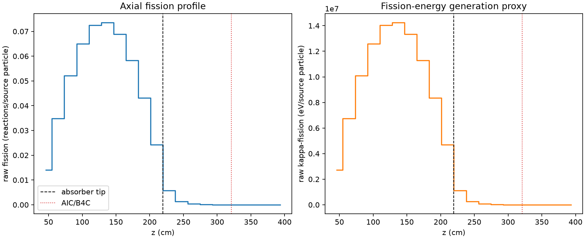
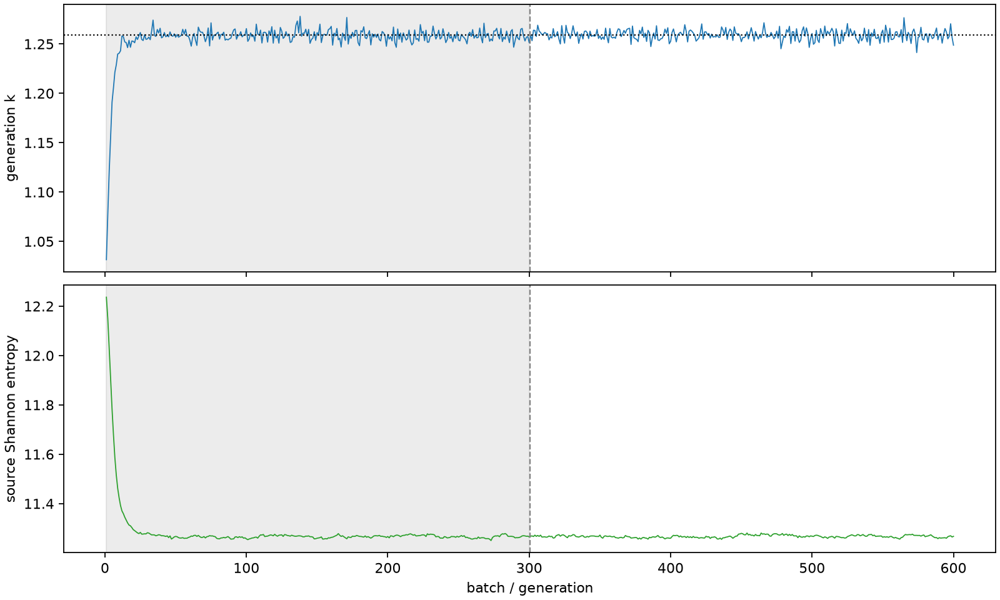

| field | value |
|---|---|
| experiment | V2-STAGE_256_OGRENCI_01-0015 |
| k | 1.2591883037400284 |
| MC standard error | 0.00017945353790806202 |
| seconds | 969.3835002759879 |
| acceptance | not_assessed |
| convergence | review_required |
Completed is output integrity only; physical and statistical review required. Zero tallies do not prove zero production or zero uncertainty.
| diagnostic | value |
|---|---|
| geometric fuel voxels | 5280 |
| zero fission tally voxels | 570 |
| low signal fuel voxels | 1635 |
| low signal fission share | 8.473173062483571e-05 |
| low signal kappa share | 8.476699320319316e-05 |
| important fission share | 0.9501408612659644 |
| previous filter included | 3645 |
| duration estimate s | 1562.5173488400023 |
| actual minus estimate s | -593.1338485640144 |
| fission relative MC error | statistics |
|---|---|
| all_geometric_fuel | {"voxels": 5280, "positive_mean_voxels": 4710, "zero_mean_voxels": 570, "undefined_relative_error_voxels": 570, "median": 0.0122748349154887, "p95": 0.9523960052622659, "maximum": 1.0000000000000002} |
| low_signal | {"voxels": 1635, "positive_mean_voxels": 1065, "zero_mean_voxels": 570, "undefined_relative_error_voxels": 570, "median": 0.6193552301534399, "p95": 1.0, "maximum": 1.0000000000000002} |
| important_95pct | {"voxels": 2331, "positive_mean_voxels": 2331, "zero_mean_voxels": 0, "undefined_relative_error_voxels": 0, "median": 0.007281875419391759, "p95": 0.01110254545263827, "maximum": 0.013948400609370437} |
| outside_previous_filter | {"voxels": 1635, "positive_mean_voxels": 1065, "zero_mean_voxels": 570, "undefined_relative_error_voxels": 570, "median": 0.6193552301534399, "p95": 1.0, "maximum": 1.0000000000000002} |
| kappa_fission relative MC error | statistics |
|---|---|
| all_geometric_fuel | {"voxels": 5280, "positive_mean_voxels": 4710, "zero_mean_voxels": 570, "undefined_relative_error_voxels": 570, "median": 0.01226222536490306, "p95": 0.9521278774325305, "maximum": 1.0000000000000002} |
| low_signal | {"voxels": 1635, "positive_mean_voxels": 1065, "zero_mean_voxels": 570, "undefined_relative_error_voxels": 570, "median": 0.618560696959921, "p95": 1.0, "maximum": 1.0000000000000002} |
| important_95pct | {"voxels": 2331, "positive_mean_voxels": 2331, "zero_mean_voxels": 0, "undefined_relative_error_voxels": 0, "median": 0.007274331971810334, "p95": 0.011090730902075484, "maximum": 0.013934346854905674} |
| outside_previous_filter | {"voxels": 1635, "positive_mean_voxels": 1065, "zero_mean_voxels": 570, "undefined_relative_error_voxels": 570, "median": 0.618560696959921, "p95": 1.0, "maximum": 1.0000000000000002} |
| axial bin | fission share | kappa-fission share |
|---|---|---|
| 1 | 0.027442329061094714 | 0.027443330137660836 |
| 2 | 0.0676465066631727 | 0.06764625546530349 |
| 3 | 0.10127087139852817 | 0.10127034101639155 |
| 4 | 0.12648006578889265 | 0.12647937434895012 |
| 5 | 0.1409548497106082 | 0.14095367387147917 |
| 6 | 0.14292521411694473 | 0.14292446779505716 |
| 7 | 0.1339817680726496 | 0.1339805263836384 |
| 8 | 0.11334013035164972 | 0.11333958201686188 |
| 9 | 0.08399738983365809 | 0.08399694036163448 |
| 10 | 0.047243329209053685 | 0.04724353735964917 |
| 11 | 0.01118285747651926 | 0.011186088728745337 |
| 12 | 0.0026559529459425205 | 0.0026568418151476218 |
| 13 | 0.0006599612481148294 | 0.0006601858567470422 |
| 14 | 0.00016554271232085296 | 0.00016559811637906297 |
| 15 | 4.159202250895911e-05 | 4.161302594430069e-05 |
| 16 | 9.211492563325744e-06 | 9.214751114858014e-06 |
| 17 | 1.6719747875351497e-06 | 1.67268771517152e-06 |
| 18 | 6.680099401406581e-07 | 6.680419692217628e-07 |
| 19 | 8.791105018548905e-08 | 8.821961110157943e-08 |
| 20 | 0.0 | 0.0 |
Histories include the inactive-to-active transition at batch 300. kappa-fission approximates fission energy production, not total heat deposition.

